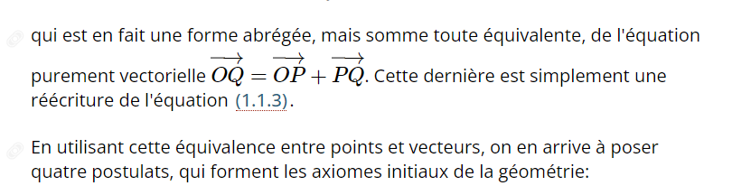
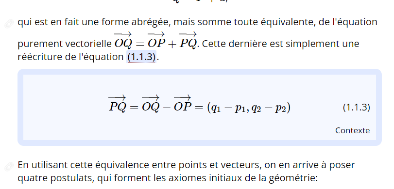
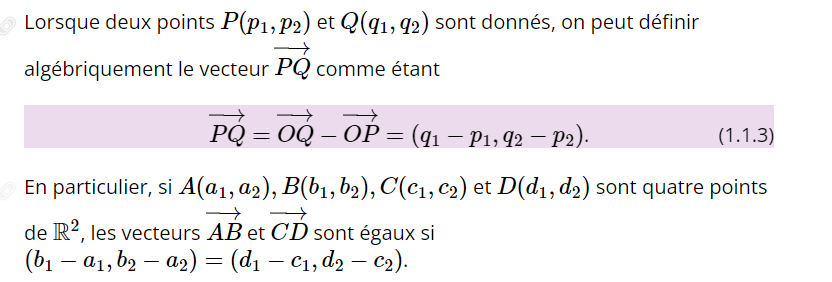
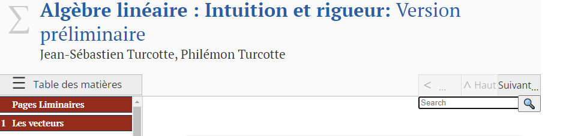
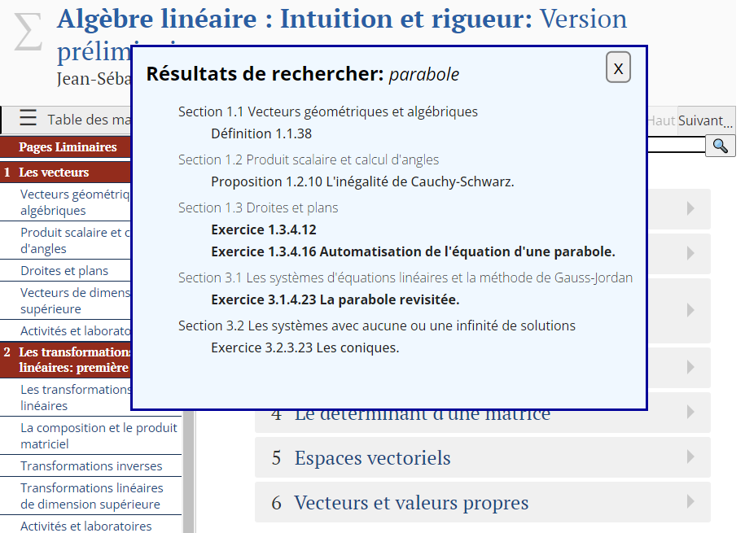
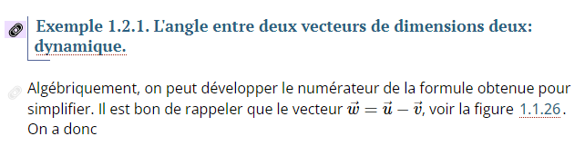

Préface Comment utiliser les fonctionnalités de ce manuel
Dans sa version web, ce manuel contient plusieurs ajouts qui facilitent l’apprentissage et bonifient la lecture. En voici quelques-uns:
Les liens “knowl”.
L’une des principales fonctionnalités de la version web est la référence “knowl”. Un “knowl” est un lien cliquable vers une partie du texte représentant une équation, un exemple, une proposition, un exercice, etc. Ces liens, en bleu et soulignés par de subtils pointillés, ouvrent un cadre à l’intérieur de la fenêtre dévoilant le contenu. Lorsque le “knowl” est une référence à un contenu, plutôt que le contenu en soi, il est possible de cliquer sur “contexte” afin de se rendre à l’endroit dans le texte où pointe le lien. Les images ci-dessous montrent un “knowl” et l’effet après un clic.



L’avantage principal d’un “knowl” est que, après un clic sur un lien, la page reste en place et le contenu s’ouvre à même l’endroit où le lien se trouve. Il y a quelques exceptions à cette règle, d’abord lorsque le lien pointe vers un chapitre ou une section entière. Dans ce cas, le lien mène au début du chapitre ou de la section.
Dans la version PDF, les “knowls” sont remplacés par des hyperliens traditionnels. Un clic renvoie à l’endroit du texte où se trouve la référence. Dans certains lecteurs PDF, on peut revenir à l’endroit précédent en appuyant simplement sur les touches alt+←. Ce n’est pas un “knowl”, mais c’est mieux que de se perdre dans le texte.
Figures interactives.
Le texte contient une multitude de figures interactives, la plupart créées à l’aide du logiciel Geogebra. Près de chaque figure interactive se trouve un “knowl” contenant les instructions pour manipuler la figure. Le texte entourant la figure est aussi accompagné d’explications.
Dans la version PDF, un code QR renvoie à une page web contenant la figure interactive.
Cellules Sage.
Au travers du texte, on retrouve à plusieurs endroits des cellules Sage comme celle-ci:
Parfois vide, parfois avec du contenu, il est possible d’exécuter le code s’y trouvant en cliquant sur “Évaluer (Sage)”. Les cellules d’une même page, exception faite de celles qui sont à l’intérieur d’un “knowl”, gardent en mémoire le résultat des cellules exécutées avant, jusqu’au rafraichissement de la page. Si une cellule cause un message d’erreur, il est possible qu’il soit nécessaire d’exécuter une cellule précédente. Normalement, seules les cellules rapprochées ont une dépendance.
Lorsque la cellule possède du contenu, on devrait retrouver, dans la version PDF, un aperçu du résultat produit lors de l’exécution de la cellule.
Recherche intelligente.
Toujours dans sa version web, une boite de recherche est disponible dans le coin supérieur droit. En entrant du texte dans le champ de recherche et en cliquant sur ⮠ ou sur la loupe, cela ouvrira une fenêtre à même la page avec des liens vers toutes les parties du texte qui comprennent l’expression recherchée.


Des liens vers n’importe quelle partie du texte.
Envie de pointer vers un endroit spécifique au texte, comme un exemple, un exercice ou même un paragraphe, pour demander des explications ou des précisions? C’est possible sur la version web. À la gauche de la majorité des éléments se trouve, de manière presque transparente, une petite icône cliquable qui offrira un lien vers la portion souhaitée, ainsi qu’une courte description. Par exemple, un clic sur l’icône de la figure suivante produit le texte suivant: “Exemple 1.2.1: L’angle entre deux vecteurs de dimensions deux: dynamique https://jeansebastienturcotte.github.io/ALIR/sec-prodscal.html#ex-angle2d”. Dans la figure, on voit également, sous l’icône à cliquer en surbrillance (effet de la souris qui est sur l’icône), une autre icône, à peine visible, pour laquelle un clic offrira un lien vers le paragraphe sous l’exemple.
